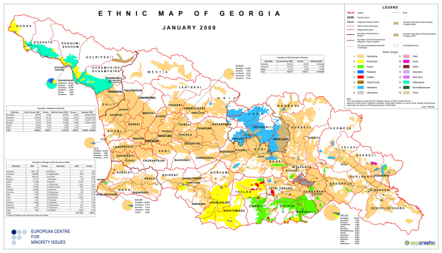

სოფელი
ბერეთის
- ჭიათურის მუნიციპალიტეტში მდებარეობს ზღვის დონიდან
მეტრია, ჭიათურის რაონული ცენტრიდან
24
კილომეტრშია.სოფელში არის საშუალპ სკოლა. საფეხბურთო მოედანები.სოფელში მდებარეობს რამოდენიმე ეკლესია. რომელთაგან ერთი არის საუკუნის ეკლესია
